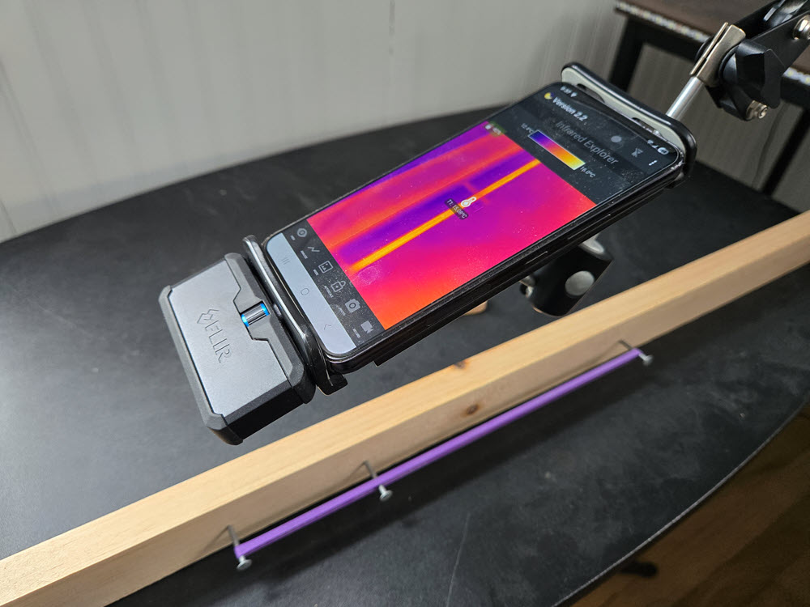
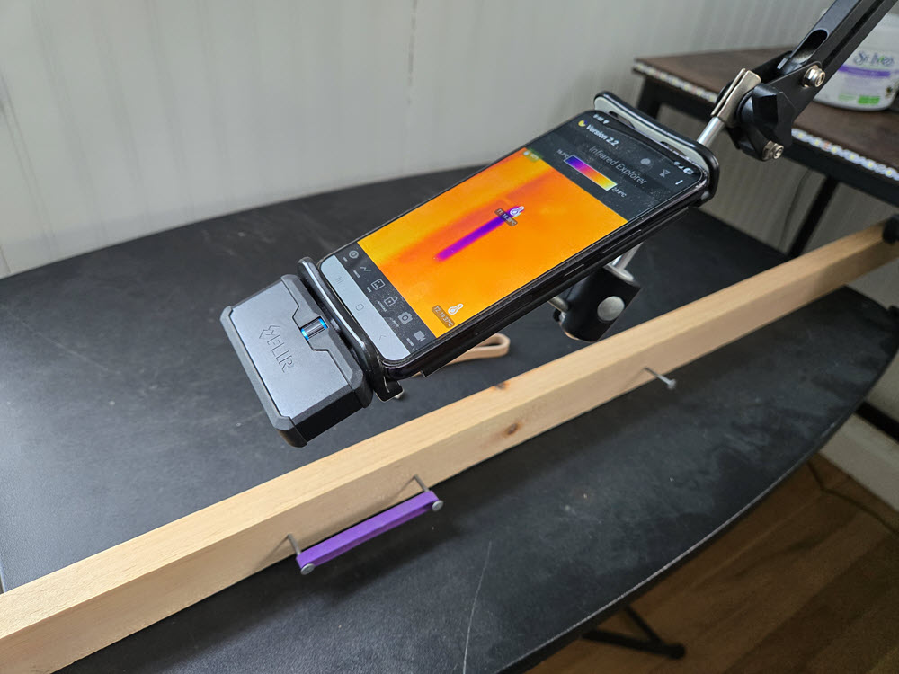
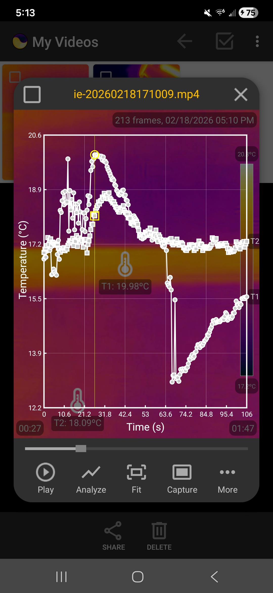
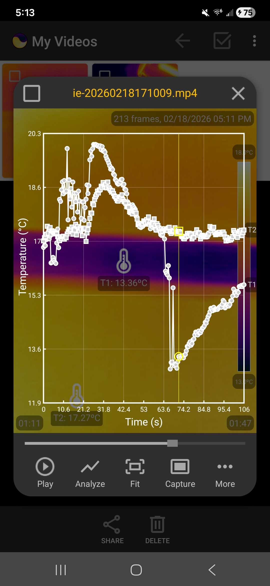

The rubber band experiment under a thermal camera
The classic lip test gets an upgrade: stretch a rubber band, watch it heat, release it, and watch it cool — all captured as data and images by a thermal camera.
The simple rubber band experiment demonstrates the fascinating effects of entropic force among polymers in a rubber hand. It involves three steps: (1) Exothermicity: Stretching a rubber band results in the rising of its temperature; (2) Equilibrium: Keeping it in the stretched state for a while allows it to cool back to room temperature; and (3) Endothermicity: Releasing it after that causes the temperature to drop below room temperature. This effect can often be felt with a simple "lip test" using the skin on your lips as the sensor to detect temperature changes. In this article, we show you that a thermal camera can turn this experiment from a "feeling" to a visible, data-driven demonstration, allowing you to see the temperature changes in real time. Using this thermal imaging technique also eleminates the subjectivity of the "lip test," especially when the temperature change is less than 1°C.
Experimental design
To collect reliable temperature data with thermal imaging, we need to find a way to fix the rubber band in place when it is stretched and relaxed. The following images show a setup using three nails hammered into a piece of wood. The distance between the first two nails from the left is set to be the flat (unstretched) length of the rubber band. The distance between the second nail and the third nail is set to be about twice as much as the flat length. Note that the latter distance depends on the elasticity of the rubber band that you use. It may not be possible to stretch less flexible rubber bands that far. In general, the more we stretch the rubber band, the more dramatic the temperature change will be.
The thermal camera (FLIR ONE) is attached to a phone mounted on a 360° rotating holder of a table stand, allowing us to easily adjust the observation position and angle. To get clear pictures and reliable data, the camera should be 3-4 inches above the rubber band and should cover the rubber band section between the first two nails. Make sure that the hand pulling and releasing the rubber hand does not enter into the thermal image.


Use three nails to fix the rubber band in place when it is stretched and relaxed.
Experimental results
To gather data, use the Infrared Explorer app to record the experiment. This allows us to focus on conducting the experiment without being distracted by data collection. Considering that it is likely that we will not get everything right in the first try, we need to repeat the experiment multiple times (runs) and pick the one that presents the best results. For data integrity and clarity, do not record a long video that spans multiple runs. Record each run as a seperate episode. We can then view and analyze the data in each episode later and select the best episode for the lab report.
The following screenshots show the temperature data collected in one run, visualized as graphs within the app. Note that, in shooting this video, we rotated the camera 90° and moved it even closer so that the hand was out of the camera's field of view all the time.


Temperature graphs showing the heating and cooling when the rubber hand is stretched and released.
The science
To understand this phenomenon, we have to introduce the concept of entropy. When the rubber band is stretched, its long, tangled polymer chains are transformed into a straight, orderly alignment. Orderly states have lower entropy. Since the universe prefers disorder, the rubber "fights" this by becoming more energetic. When the rubber band is contracted, the polymer chains return to their tangled, chaotic, high-entropy state. The molecules become less kinetic in this process, which makes the band feel cold. Combining these heating and cooling steps with the equilibration steps, the rubber band acts like the coolant in a refrigerator that completes a thermodynamic cycle.
← Back to Infrared Explorer